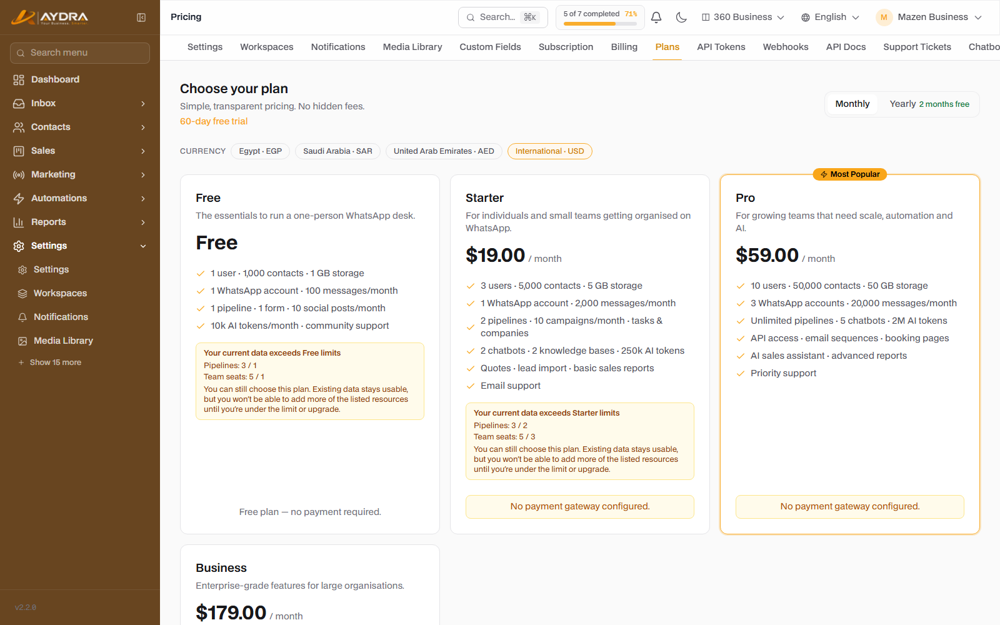
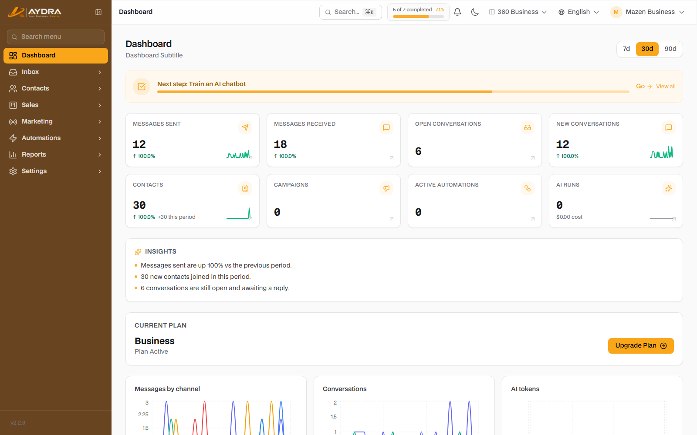
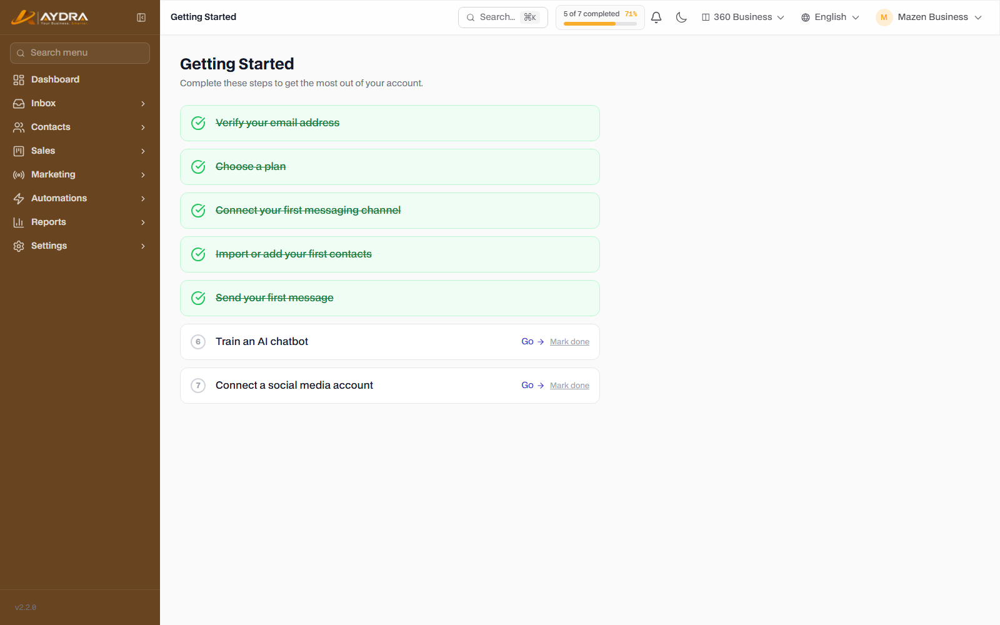

Getting Started
From creating your account to the first message you send. Read this guide before any other: it explains plans, roles and how the interface is organized, and it is the foundation for understanding the rest of the guides.
Golden rule: AYDRA does not run the channels on your behalf. You (the customer) supply the WhatsApp, SMS, email, AI and store keys. That is why you should not start by inviting your team before you finish the Setup & Integrations guide.
1. Creating the account and verifying your email
- Open the platform link the administrator gave you, then click “Create account”.
- Enter your name, email and password. Use a real email — the verification message is sent to it.
- Open the verification message and click the link. If it does not arrive, request a resend from the verification page.
- Sign in. The system also supports signing in with a Magic Link if it is enabled on your platform.
You cannot use most screens before verifying your email. If the verification page keeps appearing, check your Spam folder first.
2. Choosing a plan

Every new account starts with a trial period. After that you choose a plan from the pricing page inside the customer dashboard. Features appear or are hidden depending on the plan, and the limits apply to creation only — your existing data is not deleted when you upgrade or downgrade.
| Plan | Best for | Users | Contacts | Storage | WhatsApp/month |
|---|---|---|---|---|---|
| Free | A single user getting started | 1 | 1,000 | 1 GB | 100 |
| Starter | An individual or a small team | 3 | 5,000 | 5 GB | 2,000 |
| Pro | A growth team | 10 | 50,000 | 50 GB | 20,000 |
| Business | Enterprises | 30 | 250,000 | 250 GB | 100,000 |
| Free Trial | A 60-day trial | 30 | 250,000 | 250 GB | 100,000 |
What changes between plans?
- Numeric limits: number of users, contacts, storage, messages, tokens, leads... etc.
- Features: some screens only appear on higher plans (such as API, email sequences, AI SDR, White-label).
- Free trial: all features are unlocked for 60 days with Business-level data limits.
If there is a feature you cannot see in the sidebar, it is most likely not included in your plan — it is not a bug. Check the Account Admin guide or the “Plans” page.
3. Workspace
The workspace is the container your data lives inside: contacts, conversations, leads, campaigns, settings... everything. A single user can belong to more than one workspace and switch between them.
- Open Settings → Workspaces to create a new workspace or switch between them.
- Each workspace has completely separate data — contacts from one workspace never mix with another.
- The domain or subdomain is linked to the workspace (see the Integrations guide).
4. Roles and permissions
The system recognizes three basic roles inside a workspace. Assigning the wrong role is the most common cause of “I can’t find the screen” complaints.
| Role | What they can do | What they cannot do |
|---|---|---|
| Administrator | Everything: team, billing, integrations, settings, logs, deletion | — |
| Staff | Daily work: conversations, contacts, leads, campaigns | Managing the team, billing and sensitive integrations |
| Viewer | Viewing and reports only | Adding, editing or deleting |
For invitations: Settings → Team → Invite member. The invitation arrives by email, and the member completes registration from the invitation link.
5. A tour of the interface

The sidebar is divided into fixed areas. Every screen in the system falls under one of them:
| Area | What you will find there |
|---|---|
| Inbox | Conversations, channel setup, canned replies, labels |
| Contacts | Customers, segments, import, custom fields |
| Sales | Leads, pipeline, companies, tasks, quotes, invoices, products, sequences, calls, AI SDR, store |
| Marketing | Campaigns, WhatsApp templates, auto-replies, chat widget, SMS, social, forms, booking |
| Automation | Automation scenarios and the run log |
| Reports | Sales, conversations, campaigns, automation, AI, social |
| Settings | Account, team, billing, integrations, security, support |
At the top of the screen there is a global search (⌘K / Ctrl+K) for quick access to any customer, conversation or lead.
6. The first seven steps

The system shows you an onboarding checklist in the dashboard. Complete it in order:
- Verify your email — a prerequisite.
- Choose a plan — or continue on the trial.
- Connect your first channel — WhatsApp, Instagram or Messenger.
- Add or import your first contacts.
- Send your first message — from the inbox or a campaign.
- Train your first chatbot — requires a knowledge base and an AI provider.
- Connect your first social account.
7. Initial settings we recommend
- Company logo and details from Settings — they appear on invoices and emails.
- Time zone and currency — they affect appointments and reports.
- Email and push notifications — from Settings → Notifications.
- Enabling two-factor authentication (2FA) for the admin account — from Profile → Two-Factor.
- Inviting the team with the correct roles from the start.
Common mistakes
| Problem | Likely cause | Solution |
|---|---|---|
| The verification email does not arrive | Wrong email or Spam | Check your email and Spam, then resend |
| A screen does not appear in the menu | Not included in the plan or role | Check the plan and role (Administrator/Staff/Viewer) |
| I cannot see a previous team’s data | You are in a different workspace | Switch workspaces from Settings → Workspaces |
| “You’ve reached the maximum” | The plan limit was exceeded | Old data still works, but new data stops — upgrade the plan |
You have finished the basics. The next step is mandatory: Setup & Integrations (BYOK) — without it, WhatsApp, email and AI will not work.